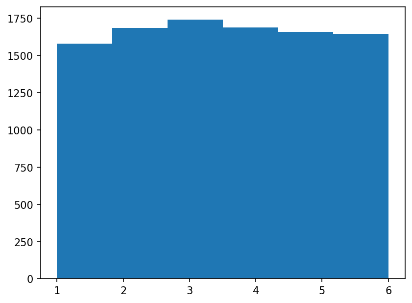
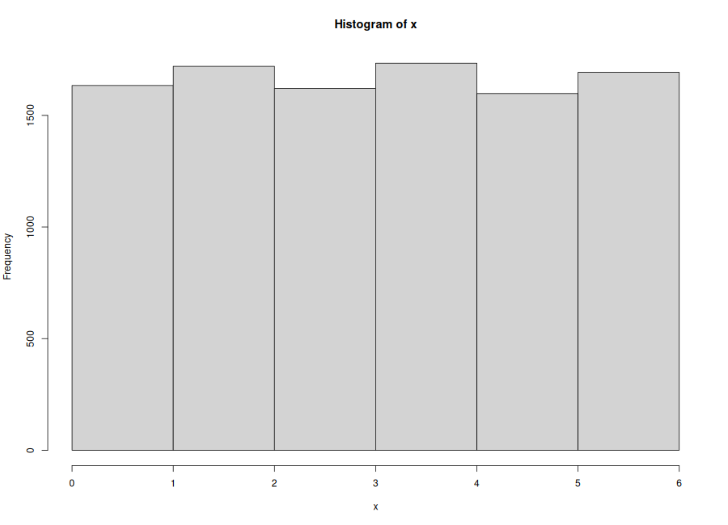
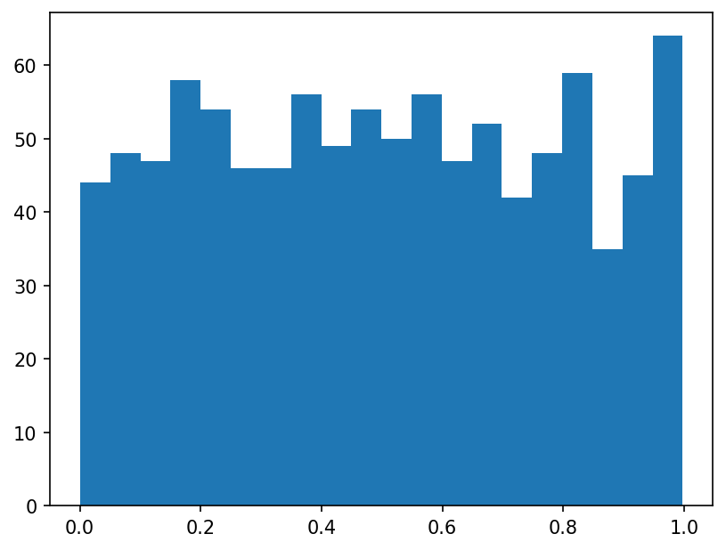
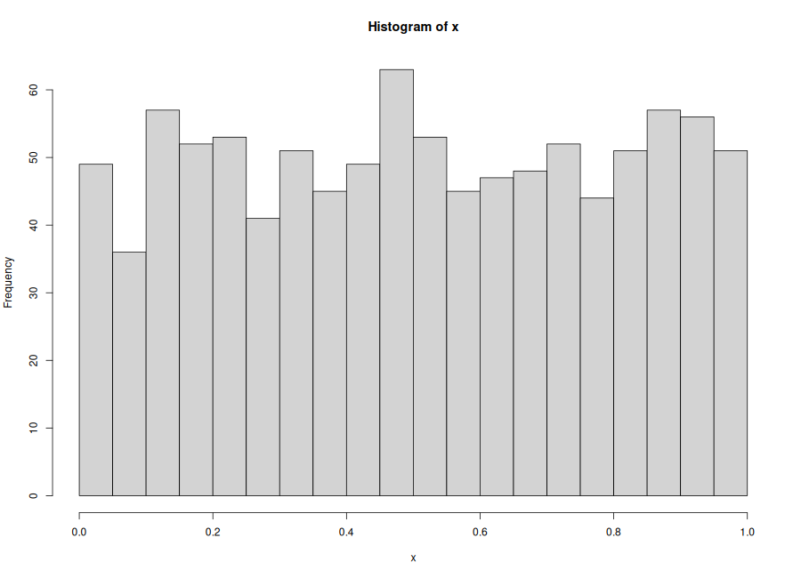
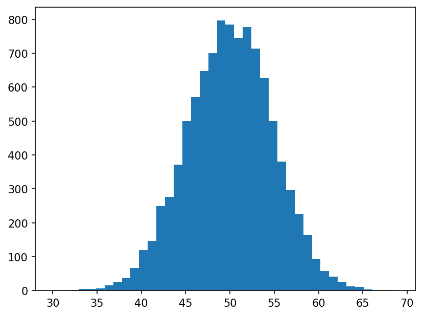
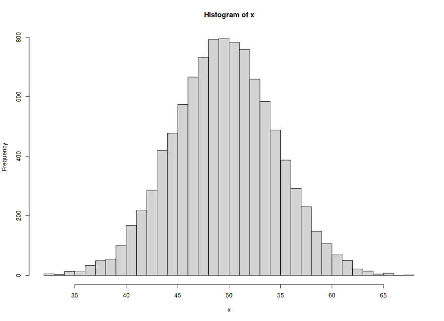
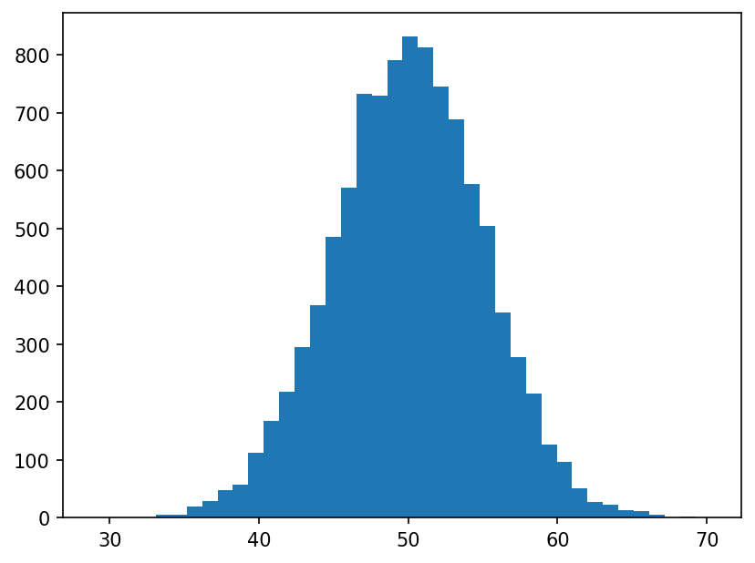
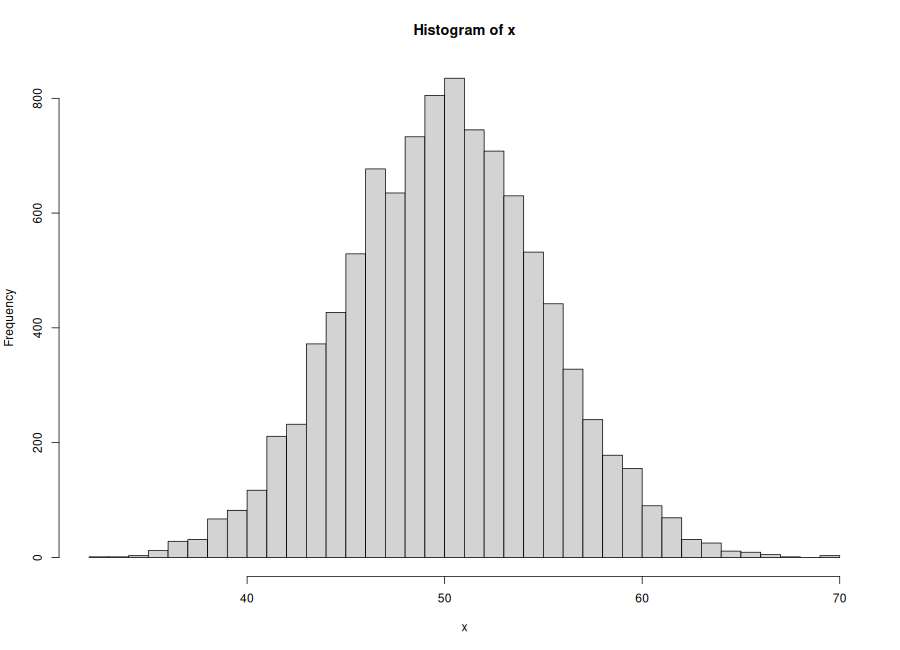

データサイエンスプログラミング入門
できていると良いこと（最低限）
/home/datasci/work に移動し、ファイルを作って編集できるpython ... と Rscript ... を実行できるポイント
| 言語 | seedの例 |
|---|---|
| Python | rng = np.random.default_rng(2025) |
| R | set.seed(2025) |
今日見る形（予告）
WSL2環境では、図の「画面表示」が詰まりやすい
→ まずは PNGに保存 して VS Code で開く（確実）
| 言語 | 保存の定番 |
|---|---|
| Python | plt.savefig("x.png", dpi=150, bbox_inches="tight") |
| R | png("x.png"); ...; dev.off() |
| 種類 | R | Python（その1） | Python（その2：推奨） |
|---|---|---|---|
| 一様（離散） | sample |
np.random.choice / np.random.randint |
rng.integers |
| 一様（連続） | runif |
np.random.random |
rng.random |
| 二項 | rbinom |
np.random.binomial |
rng.binomial |
| 正規 | rnorm |
np.random.normal |
rng.normal |
cd /home/datasci/workvenvcpython -V / Rscript --versionpython -c "import numpy, matplotlib; print('OK')"目的：1〜6が「だいたい同じ回数」出るかを見る
期待する形：棒がだいたい同じ高さ（完全一致ではない）
import numpy as np
import matplotlib.pyplot as plt
rng = np.random.default_rng(2025)
x = rng.integers(low=1, high=7, size=10000) # highは最大+1
plt.hist(x, bins=6)
plt.savefig("./figures/fig4-3-01_dice.png", dpi=150, bbox_inches="tight")


set.seed(2025)
x <- sample(x = 1:6, size = 10000, replace = TRUE)
png("./figures/fig4-3-01_dice_R.png", width = 900, height = 650)
hist(x, breaks = 0:6)
dev.off()
目的：0〜1の連続値が「だいたい均一」に出るかを見る
期待する形：0〜1でだいたい平ら
import numpy as np
import matplotlib.pyplot as plt
rng = np.random.default_rng(2025)
x = rng.random(1000)
plt.hist(x, bins=20)
plt.savefig("./figures/fig4-3-02_uniform01.png", dpi=150, bbox_inches="tight")


set.seed(2025)
x <- runif(n = 1000, min = 0, max = 1)
png("./figures/fig4-3-02_uniform01_R.png", width = 900, height = 650)
hist(x, breaks = 20)
dev.off()
| 観点 | 離散一様（サイコロ） | 連続一様（0〜1） |
|---|---|---|
| 値 | 整数（カテゴリ） | 小数（連続） |
| ヒストグラム | binsは少なめでOK | binsで見え方が変わる |
| 直感 | 「出目が均等」 | 「範囲が均等」 |
二項分布は「成功回数」を表す分布
これを 1万回 繰り返すと、分布の形が見える
trials：1回の実験の試行回数（=100回投げる）repeats：実験を何回繰り返すか（=1万回）
| 言語 | 呼び方 | 意味 |
|---|---|---|
| Python | rng.binomial(n=trials, p=p, size=repeats) |
size が“乱数の個数” |
| R | rbinom(n=repeats, size=trials, prob=p) |
n が“乱数の個数” |
import numpy as np
import matplotlib.pyplot as plt
rng = np.random.default_rng(2025)
trials = 100
p = 0.5
repeats = 10000
x = rng.binomial(n=trials, p=p, size=repeats)
plt.hist(x, bins=40)
plt.savefig("./figures/fig4-3-03_binom_coin.png", dpi=150, bbox_inches="tight")


set.seed(2025)
trials <- 100
p <- 0.5
repeats <- 10000
x <- rbinom(n = repeats, size = trials, prob = p)
png("./figures/fig4-3-03_binom_coin_R.png", width = 900, height = 650)
hist(x, breaks = 40)
dev.off()
今日の立ち位置：
正規分布（釣鐘型）は、主に2つで決まる
例：平均50、標準偏差5 の正規乱数を1万個
import numpy as np
import matplotlib.pyplot as plt
rng = np.random.default_rng(2025)
x = rng.normal(loc=50, scale=5, size=10000) # loc=平均, scale=標準偏差
plt.hist(x, bins=40)
plt.savefig("./figures/fig4-3-04_normal_hist.png", dpi=150, bbox_inches="tight")


set.seed(2025)
x <- rnorm(n = 10000, mean = 50, sd = 5)
png("./figures/fig4-3-04_normal_hist_R.png", width = 900, height = 650)
hist(x, breaks = 40)
dev.off()
| やりたいこと | Python（推奨） | R | つまずきやすい点 |
|---|---|---|---|
| seed固定 | np.random.default_rng(2025) |
set.seed(2025) |
再現したいときは固定 |
| サイコロ | rng.integers(1, 7, size=...) |
sample(1:6, size=..., replace=TRUE) |
Pythonのhighは最大+1 |
| 0〜1一様 | rng.random(n) |
runif(n, 0, 1) |
Pythonのrandomは0〜1 |
| 二項 | rng.binomial(n=trials, p=p, size=repeats) |
rbinom(n=repeats, size=trials, prob=p) |
Rのnは乱数の個数 |
| 正規 | rng.normal(loc=mean, scale=sd, size=...) |
rnorm(n=..., mean=..., sd=...) |
scaleは標準偏差 |
| 項目 | Python | R |
|---|---|---|
| ヒストグラム | plt.hist(x, bins=...) |
hist(x, breaks=...) |
| 図保存 | plt.savefig("x.png", ...) |
png("x.png"); ...; dev.off() |
| よくあるミス | plt.show() に頼って表示できない |
dev.off() を忘れて空画像 |
ModuleNotFoundError: No module named 'matplotlib'python -m pip install -U matplotlib numpysavefig() で保存してVS Codeで開く（推奨）dev.off() を忘れていないか確認trials（試行回数）と repeats（実験回数）に分けるCopilotは「答え」ではなく 実装速度を上げる相棒
今日の鉄則
目的：
「1回はブレるが、多数回で安定する」感覚を 平均値 で確かめる
やること：
サイコロ（1〜6）を N 回振り、平均を計算する
作業フォルダ：ex4-3/ を作る
ex4-3-01_dice_mean.pyex4-3-01_dice_mean.Rex4-3-01_result.md（Markdown表＋考察3〜6行）評価の観点
import numpy as np
rng = np.random.default_rng(2025)
Ns = [100, 1000, 10000]
for N in Ns:
x = rng.integers(low=1, high=7, size=N)
print("N =", N, "mean =", float(x.mean()))
set.seed(2025)
Ns <- c(100, 1000, 10000)
for (N in Ns) {
x <- sample(x = 1:6, size = N, replace = TRUE)
cat("N =", N, "mean =", mean(x), "\n")
}